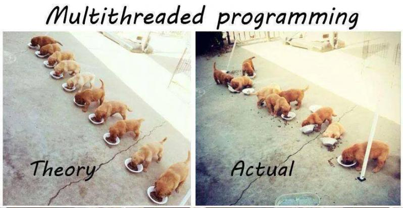
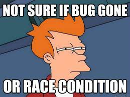
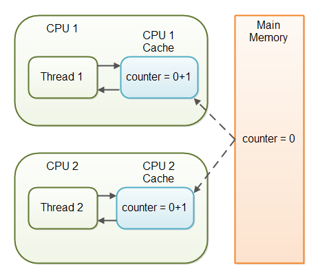
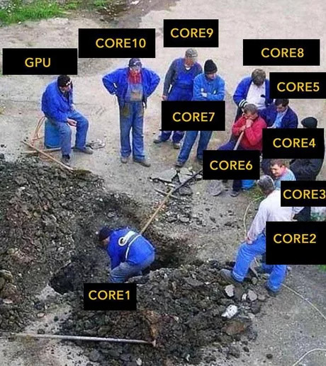
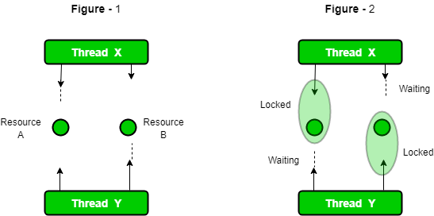
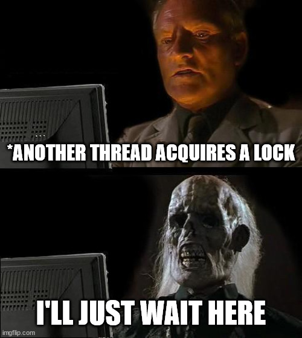
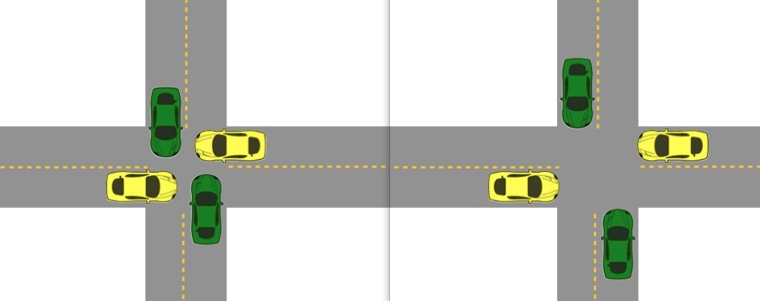

Przetwarzanie równoległe i strumieniowe
Wykład 4
Anomalie przetwarzania równoległego: race condition, zakleszczenie, zagłodzenie


Plan wykładu
race condition, operacje atomowe, GIL, sekcja krytyczna, check-then-act
volatile w Javie i dlaczego Python go nie potrzebuje
warunki Coffmana, graf oczekiwania, kolejność blokad, timeout, diagnoza
sprawiedliwość blokad, priorytety, postarzanie, inwersja priorytetów, back-off
kolejność wyników, dostęp do zasobów, liczba wątków, priorytety
procesy, metody startu, fork a wątki, pamięć współdzielona, Pool
Dlaczego to trudne?
Błędy współbieżności są niedeterministyczne: program przechodzi testy 99 razy, a za setnym razem gubi dane albo się zawiesza.
Na wykładzie 3 poznaliśmy narzędzia (Lock, Condition, Semaphore). Dziś zobaczymy, co się dzieje, gdy ich zabraknie albo gdy użyjemy ich źle.
Teoria vs praktyka
https://devrant.com/rants/88296/knock-knock-race-condition-whos-there

Wyścig (race condition)
Wyścig (race condition) występuje, gdy wynik programu zależy od kolejności, w jakiej wątki wykonają operacje na współdzielonych danych.
Planista może przełączyć wątek w dowolnym momencie, więc tej kolejności nie znamy: wątki „ścigają się” o dane, a wynik bywa inny przy każdym uruchomieniu.
Wyścig o dane (data race): co najmniej dwa wątki korzystają z tej samej zmiennej, przynajmniej jeden ją zapisuje i nie ma synchronizacji.
Race condition to pojęcie szersze: błąd logiki, np. „sprawdź, potem działaj” (check-then-act), zdarza się nawet wtedy, gdy każda pojedyncza operacja jest atomowa.

http://www.quickmeme.com/meme/36fvwp
Operacje atomowe (atomicity)
Operacja jest atomowa, gdy dla innych wątków wykonuje się „w całości albo wcale”: nikt nie zobaczy stanu pośredniego ani nie wejdzie ze swoją zmianą w jej środek. Zmienna atomowa (np. AtomicInteger w Javie) zapewnia to dla odczytu, zapisu i operacji typu „zwiększ o 1”.
Atomowość nie znaczy, że wątek nie zostanie wywłaszczony: system może go przełączyć także w trakcie, ale żaden inny wątek nie zobaczy „połowy” operacji.
Co jest atomowe w CPython?
W CPython z GIL pojedyncza operacja na wbudowanym typie, wykonywana w całości w C, jest atomowa (lista z FAQ Pythona; L to lista, D słownik):
| Atomowe | Nieatomowe (kilka kroków) |
|---|---|
L.append(x), L1.extend(L2) | i = i + 1, i += 1 |
x = L[i], x = L.pop() | L.append(L[-1]) |
L1[i:j] = L2, L.sort() | L[i] = L[j] |
x = y, x.field = y | D[x] = D[x] + 1 |
D[x] = y, D1.update(D2), D.keys() | if x not in D: D[x] = y |
Tylko dla typów wbudowanych z wbudowanymi elementami. Gdy w trakcie wykona się kod w Pythonie (__hash__, __eq__, __lt__ przy sort(), __del__), operacja przestaje być atomowa.
Python 3.13t (free-threaded, bez GIL): list, dict i set mają wewnętrzne blokady, więc operacje z lewej kolumny nadal są bezpieczne. Dokumentacja zaznacza jednak, że to opis obecnej implementacji, a nie gwarancja.
Dlaczego counter += 1 nie jest atomowe?
import dis
def inc():
global counter
counter += 1
dis.dis(inc)
3 RESUME 0
5 LOAD_GLOBAL 0 (counter)
LOAD_CONST 1 (1)
BINARY_OP 13 (+=)
STORE_GLOBAL 0 (counter)
RETURN_CONST 0 (None)
Wynik dla Pythona 3.13. Starsze wersje miały inne nazwy instrukcji (np. INPLACE_ADD), ale te same kroki.
Jedna linia kodu to trzy kroki:
- odczyt wartości (
LOAD_GLOBAL), - obliczenie nowej wartości (
BINARY_OP), - zapis wyniku (
STORE_GLOBAL).
Między nimi interpreter może przełączyć wątek.
Tak samo self.value += 1 (LOAD_ATTR … STORE_ATTR), d[k] += 1 i a[0] = b[0]: odczyt i zapis to osobne instrukcje.
Utracona aktualizacja: symulacja
Wątek T1
Pamięć współdzielona
Wątek T2
Wyścig w praktyce
import threading, time
counter = 0
def jeden(): # dowolna funkcja napisana w Pythonie
return 1
def inc(n):
global counter
for _ in range(n):
counter = counter + jeden() # odczyt ... wywołanie ... zapis
start = time.perf_counter()
threads = [threading.Thread(target=inc, args=(1_000_000,)) for _ in range(4)]
for t in threads:
t.start()
for t in threads:
t.join()
print(f"counter = {counter:,} w {time.perf_counter() - start:.2f} s")
counter = 1,905,872 w 0.42 s counter = 1,307,678 w 0.42 s counter = 2,993,032 w 0.46 s
Trzy uruchomienia w Pythonie 3.13: za każdym razem inny wynik zamiast 4,000,000.
- Sam
counter += 1w CPython 3.13 z GIL daje 4,000,000, ale przypadkiem: GIL przełącza wątki tylko w wybranych miejscach (m.in. skok na początek pętli, wejście do funkcji), a nie między odczytem a zapisem. - Wystarczy wywołanie funkcji między odczytem a zapisem (jak tu) i aktualizacje giną.
- W wersji free-threaded (3.13t) wątki działają naprawdę równolegle i gubi się także sam
counter += 1.
Kod, który „działa”, nie musi być poprawny. Wynik zależy od wersji interpretera, obciążenia maszyny i szczęścia.
Sekcja krytyczna (critical section)
counter = 0
lock = threading.Lock()
def inc(n):
global counter
for _ in range(n):
with lock: # sekcja krytyczna
counter = counter + jeden()
# reszta jak na poprzednim slajdzie
counter = 4,000,000 w 1.46 s
Blokada nie wstrzymuje przełączania wątków w środku sekcji krytycznej. Zapobiega temu, by inny wątek wszedł do kodu chronionego tą samą blokadą, dopóki ją trzymamy.
import threading, time
counter = 0
lock = threading.Lock()
def inc(n):
global counter
lokalnie = 0
for _ in range(n):
lokalnie += 1 # tylko dane tego wątku
with lock:
counter += lokalnie # jedna krótka sekcja krytyczna
start = time.perf_counter()
threads = [threading.Thread(target=inc, args=(1_000_000,)) for _ in range(4)]
for t in threads:
t.start()
for t in threads:
t.join()
print(f"counter = {counter:,} w {time.perf_counter() - start:.2f} s")
counter = 4,000,000 w 0.21 s
Blokada w każdej iteracji kosztuje: cztery wątki walczą o nią milion razy. Szybciej jest nie współdzielić danych w pętli i połączyć wyniki raz, na końcu.
Nie polegaj na atomowości
Nawet jeśli pojedyncza operacja jest atomowa, nie budujmy na tym poprawności programu:
- inny interpreter (PyPy, GraalPy) albo nowa wersja CPython może działać inaczej; wersja free-threaded 3.13t to świeży przykład,
- czytelnik kodu nie wie, które operacje są atomowe, i łatwo zepsuje kod drobną zmianą,
- sekwencja atomowych operacji nie jest atomowa.
if key not in cache: # atomowe
cache[key] = compute(key) # atomowe, ale razem: wyścig!
stack.append(stack[-1]) # odczyt i zapis: dwie operacje
Bezpieczniej: jedna operacja na słowniku (cache.setdefault(key, value)) albo blokada wokół całej sekwencji.
Sprawdź się
Które operacje są atomowe w CPython z GIL? L to lista, D słownik z kluczami typu str. (zaznacz wszystkie)
Atomowe są pojedyncze operacje wykonywane w C na typach wbudowanych. += na zmiennej lub elemencie słownika oraz L[i] = L[j] to osobny odczyt i zapis.
Dwa wątki wykonują raz counter += 1 bez blokady (start: counter = 0). Ile może wynosić counter na końcu?
2, gdy kroki się nie przeplotą. 1, gdy oba wątki odczytają 0 i oba zapiszą 1 (utracona aktualizacja). 0 nie jest możliwe: ktoś na pewno zapisze 1.
Check-then-act: sprzedaż biletów
Został jeden bilet, a dwóch klientów kupuje go w tej samej chwili. Oba wątki widzą, że bilet jest dostępny, i oba go sprzedają.
import threading, time
bilety = 1
sprzedane = []
def kup(klient):
global bilety
if bilety > 0: # 1. sprawdź (check)
time.sleep(0.01) # płatność, zapis do bazy...
bilety -= 1 # 2. działaj (act)
sprzedane.append(klient)
klienci = [threading.Thread(target=kup, args=(k,)) for k in ("Ala", "Olek")]
for t in klienci:
t.start()
for t in klienci:
t.join()
print("sprzedane:", sprzedane, "| pozostało biletów:", bilety)
sprzedane: ['Ala', 'Olek'] | pozostało biletów: -1
https://dev.to/victorhazbun/best-practices-avoid-race-conditions-i31
time.sleep(0.01) udaje płatność i poszerza „okno wyścigu”. Bez niego błąd zdarza się rzadko, co jest jeszcze gorsze: przechodzi testy i wychodzi na produkcji.
Check-then-act: poprawka
Sprawdzenie i działanie muszą być w jednej sekcji krytycznej:
lock = threading.Lock()
def kup(klient):
global bilety
with lock: # check i act razem
if bilety > 0:
time.sleep(0.01)
bilety -= 1
sprzedane.append(klient)
sprzedane: ['Ala'] | pozostało biletów: 0
Ten sam wzorzec, inne dane:
with lock: # x współdzielone z innym wątkiem
if x == 5:
y = x * 2 # x nie zmieni się w międzyczasie: y == 10
with lock:
if not alarm_wyslany: # bez blokady dwa wątki z tym samym
alarm_wyslany = True # odczytem czujnika wyślą dwa alarmy
wyslij_alarm(odczyt)
Wielokrotny alarm z jednego odczytu czujnika to klasyczny objaw check-then-act (por. symulacja czujnika z wykładu 1).
Jak zapobiegać wyścigom?
- Nie współdziel stanu: każdy wątek pracuje na własnych danych (zmienne lokalne,
threading.local()), a wyniki łączymy na końcu, jak w map/reduce (wykład 2). - Dane niemutowalne (
tuple,str,frozenset) można czytać z wielu wątków bez blokad (wykład 2). - Przekazuj komunikaty zamiast współdzielić zmienne:
queue.Queuejest bezpieczna dla wątków (producent-konsument, wykład 5). - Synchronizuj: sekcja krytyczna (
Lock, wykład 3) obejmuje całą sekwencję read-modify-write albo check-then-act. - Operacje atomowe: w Javie
AtomicInteger,ConcurrentHashMap. Biblioteka standardowa Pythona nie ma liczników atomowych, więc zostaje blokada albo kolejka.
Widoczność zmian: volatile w Javie
Drugi problem to widoczność: kompilator JIT i procesor mogą trzymać wartość w rejestrze i przestawiać instrukcje, więc wątek może nigdy nie zobaczyć zmiany zrobionej przez inny wątek.
public class StopFlag {
private static volatile boolean running = true;
public static void main(String[] args) throws InterruptedException {
Thread worker = new Thread(() -> {
long n = 0;
while (running) n++;
System.out.println("worker zatrzymany po " + n + " iteracjach");
});
worker.start();
Thread.sleep(100);
running = false; // zapis widoczny dla workera
worker.join();
}
}
worker zatrzymany po 138082989 iteracjach
Bez volatile ten program (Java 21, HotSpot) się nie kończy: JIT wyciąga odczyt running przed pętlę.
volatile gwarantuje:
- widoczność: zapis jest widoczny dla każdego późniejszego odczytu w innym wątku,
- porządek (happens-before): operacji sprzed zapisu
volatilenie wolno przenieść za niego, a operacji po odczycievolatileprzed niego.
Popularne uproszczenie „volatile = czytaj z pamięci głównej, nie z cache” jest nieścisłe: cache procesorów są spójne (koherentne). Problem leży w rejestrach, optymalizacjach kompilatora i przestawianiu instrukcji.
C# ma volatile o podobnym znaczeniu. W C/C++ volatile nie służy do synchronizacji wątków (tam: std::atomic).
Volatile nie wystarczy!

https://jenkov.com/tutorials/java-concurrency/volatile.html
counter++ to nadal trzy kroki. volatile sprawi, że oba wątki zobaczą aktualną wartość w chwili odczytu, ale nie zabroni im obu odczytać 0 i obu zapisać 1.
import java.util.concurrent.atomic.AtomicInteger;
public class Licznik {
static volatile int zwykly = 0;
static final AtomicInteger atomowy = new AtomicInteger();
public static void main(String[] args) throws InterruptedException {
Runnable r = () -> {
for (int i = 0; i < 1_000_000; i++) {
zwykly++; // odczyt, +1, zapis
atomowy.incrementAndGet(); // jedna operacja atomowa (CAS)
}
};
Thread a = new Thread(r), b = new Thread(r);
a.start(); b.start();
a.join(); b.join();
System.out.println("volatile int: " + zwykly);
System.out.println("AtomicInteger: " + atomowy.get());
}
}
volatile int: 1377489 AtomicInteger: 2000000
volatile daje widoczność, nie atomowość. Rozwiązania: AtomicInteger (sprzętowa instrukcja compare-and-swap) albo synchronized.
A w Pythonie? volatile i GIL
- Python nie ma
volatilei go nie potrzebuje: interpreter nie trzyma zmiennych w rejestrach między instrukcjami, a przejęcie GIL działa jak bariera pamięci. - W 3.13t (bez GIL) widoczność zapewniają operacje atomowe i blokady wewnątrz interpretera.
- GIL nie chroni przed wyścigami: chroni stan interpretera, a wątek może zostać przełączony między instrukcjami bajtkodu (prośba o oddanie GIL co
sys.getswitchinterval(), domyślnie 5 ms).
GIL w CPython…
GIL gwarantuje, że naraz wykonuje się jedna instrukcja bajtkodu. Nasze niezmienniki (np. „bilety ≥ 0”) musimy chronić sami.
Flaga zatrzymania wątku: zamiast zmiennej globalnej użyjmy threading.Event.
import threading, time
stop = threading.Event()
def worker():
n = 0
while not stop.is_set():
n += 1
print(f"worker zatrzymany po {n:,} iteracjach")
t = threading.Thread(target=worker)
t.start()
time.sleep(0.1)
stop.set()
t.join()
worker zatrzymany po 1,682,042 iteracjach
Problemy przetwarzania równoległego
https://www.reddit.com/r/ProgrammerHumor/comments/bzv8q4/parallelism_be_like/

Zakleszczenie (deadlock)
Zakleszczenie występuje, gdy co najmniej dwa wątki czekają w nieskończoność na blokady lub zasoby trzymane przez siebie nawzajem.
Program nie zgłasza błędu i nie zużywa CPU: po prostu stoi. Często stoi tylko część wątków, więc aplikacja „prawie” działa.
Analogia: na skrzyżowanie równorzędne wjechały naraz cztery samochody i każdy czeka na tego z prawej.
https://devrant.com/rants/1756955/this-is-the-real-deadlock
Zakleszczenie: dwie blokady

https://www.geeksforgeeks.org/deadlock-in-java-multithreading/
T1 przelewa z konta A na B, a T2 z B na A. Każdy zajmuje najpierw „swoje” konto.
import threading, time
konto_a = threading.Lock()
konto_b = threading.Lock()
def przelew(nazwa, z, do):
with z:
print(f"{nazwa}: mam pierwszą blokadę, czekam na drugą...")
time.sleep(0.1)
with do:
print(f"{nazwa}: przelew wykonany")
t1 = threading.Thread(target=przelew, args=("T1", konto_a, konto_b))
t2 = threading.Thread(target=przelew, args=("T2", konto_b, konto_a))
t1.start(); t2.start()
t1.join(); t2.join()
print("koniec") # nigdy się nie wykona
T1: mam pierwszą blokadę, czekam na drugą... T2: mam pierwszą blokadę, czekam na drugą...
…i nic więcej: program trzeba przerwać (Ctrl+C).
Warunki Coffmana
Zakleszczenie jest możliwe tylko wtedy, gdy jednocześnie zachodzą cztery warunki (Coffman, 1971). Wystarczy złamać jeden:
| Warunek | Co oznacza | Jak go złamać |
|---|---|---|
| Wzajemne wykluczanie (mutual exclusion) | zasób może mieć naraz tylko jeden wątek | dane niemutowalne, zasoby tylko do odczytu |
| Trzymanie i oczekiwanie (hold and wait) | wątek trzyma blokadę i czeka na kolejną | bierz wszystkie blokady naraz albo żadnej |
| Brak wywłaszczania (no preemption) | blokady nie można odebrać siłą | timeout: acquire(timeout=...), po porażce oddaj, co masz |
| Cykliczne oczekiwanie (circular wait) | cykl w grafie oczekiwania: T1 → T2 → … → T1 | globalna kolejność pobierania blokad |
Strategie: zapobieganie (łamiemy warunek), unikanie (np. algorytm bankiera Dijkstry), wykrywanie i odtwarzanie (bazy danych wykrywają cykl i wycofują jedną z transakcji).
Graf oczekiwania: symulator
Krawędź blokada → wątek: wątek ją trzyma. Krawędź wątek → blokada: wątek na nią czeka. Cykl oznacza zakleszczenie.
Zapobieganie: kolejność blokad
import threading, time
class Konto:
def __init__(self, nr, saldo):
self.nr, self.saldo = nr, saldo
self.lock = threading.Lock()
def przelew(z, do, kwota):
# zawsze najpierw blokada konta o mniejszym numerze
pierwsze, drugie = sorted((z, do), key=lambda k: k.nr)
with pierwsze.lock:
time.sleep(0.1)
with drugie.lock:
z.saldo -= kwota
do.saldo += kwota
a, b = Konto(1, 100), Konto(2, 100)
t1 = threading.Thread(target=przelew, args=(a, b, 30))
t2 = threading.Thread(target=przelew, args=(b, a, 50))
t1.start(); t2.start()
t1.join(); t2.join()
print("saldo A:", a.saldo, "| saldo B:", b.saldo)
saldo A: 120 | saldo B: 80
- Gdy wszystkie wątki pobierają blokady w tej samej kolejności, cykl w grafie oczekiwania jest niemożliwy (łamiemy cykliczne oczekiwanie).
- Klucz porządku: numer konta,
id()obiektu, poziom w hierarchii (np. najpierw tabela, potem wiersz). - T2 chce przelać z B na A, ale i tak zaczyna od blokady A, więc czeka, aż T1 skończy.
- Sprawdź w symulatorze: zaznacz „globalna kolejność blokad”.
Zapobieganie: timeout i wycofanie
import random, threading, time
konto_a, konto_b = threading.Lock(), threading.Lock()
def przelew(nazwa, z, do):
while True:
with z:
time.sleep(0.1)
if do.acquire(timeout=0.5): # czekaj najwyżej 0,5 s
try:
print(f"{nazwa}: przelew wykonany")
return
finally:
do.release()
print(f"{nazwa}: nie dostałem drugiej blokady, wycofuję się")
time.sleep(random.uniform(0, 0.2)) # losowa przerwa
t1 = threading.Thread(target=przelew, args=("T1", konto_a, konto_b))
t2 = threading.Thread(target=przelew, args=("T2", konto_b, konto_a))
t1.start(); t2.start()
t1.join(); t2.join()
T1: nie dostałem drugiej blokady, wycofuję się T2: przelew wykonany T1: przelew wykonany
Przykładowy przebieg: kolejność zależy od planisty.
lock.acquire(blocking=False)próbuje zająć blokadę i od razu zwracaTruealboFalse.lock.acquire(timeout=0.5)czeka najwyżej 0,5 s.- Po porażce oddajemy wszystkie zdobyte blokady (łamiemy „trzymanie i oczekiwanie” oraz „brak wywłaszczania”) i próbujemy ponownie.
Przerwa przed ponowną próbą powinna być losowa. Gdy wątki wycofują się w tym samym rytmie, grozi livelock (za chwilę).
Inne źródła zakleszczeń
Ponowne zajęcie tej samej blokady:
import threading
class Magazyn:
def __init__(self):
self.lock = threading.Lock() # zamień na threading.RLock()
self.stan = {"garnek": 3}
def wydaj(self, towar):
with self.lock:
self.stan[towar] -= 1
def wydaj_wiele(self, towar, n):
with self.lock:
for _ in range(n):
self.wydaj(towar) # drugi acquire tego samego Lock
m = Magazyn()
m.wydaj_wiele("garnek", 2)
print(m.stan)
Z Lock program wisi: wątek czeka sam na siebie. Z threading.RLock() (wykład 3) ten sam wątek może wejść wielokrotnie:
{'garnek': 1}
Wątki czekające na siebie przez join():
from threading import Thread, current_thread
def task(other):
ja = current_thread().name
print(f"[{ja}] czekam na [{other.name}]...")
other.join()
main = current_thread()
t = Thread(target=task, args=(main,))
t.start()
task(t)
[Thread-1 (task)] czekam na [MainThread]... [MainThread] czekam na [Thread-1 (task)]...
…i program wisi. Zakleszczenie nie wymaga jawnych blokad: wystarczy czekanie w cyklu (także na kolejce czy zdarzeniu).
Jeszcze jedno źródło: fork() w procesie z wątkami (przy multiprocessing).
Sprawdź się
Wszystkie wątki pobierają blokady w kolejności rosnących numerów kont. Który warunek Coffmana łamiemy?
Przy wspólnej kolejności krawędzie w grafie oczekiwania prowadzą zawsze od „mniejszej” do „większej” blokady, więc nie może powstać cykl.
lock = threading.Lock()
with lock:
with lock:
print("ok")
Co zrobi ten kod?
Lock nie pamięta właściciela, więc drugie acquire() czeka, aż ktoś go zwolni, a zwolnić może tylko ten sam, czekający wątek. Z RLock kod wypisze „ok”.
Zagłodzenie (starvation)
Zagłodzenie: wątek jest gotowy do pracy, ale przez bardzo długi (nieograniczony) czas nie dostaje zasobu, bo ciągle wyprzedzają go inne wątki.
W odróżnieniu od zakleszczenia system jako całość robi postęp, tylko nie dla wszystkich.
Przykład: obiekt ma zsynchronizowaną metodę, która długo trwa. „Chciwy” wątek wywołuje ją bez przerwy, a pozostałe wątki prawie nigdy nie dostają blokady.

https://imgflip.com/i/5gasaq
Przyczyny zagłodzenia
- Priorytety: wątki o wysokim priorytecie zajmują CPU, a te o niskim czekają (Java:
Thread.setPriority(), system:nice). Python nie ma priorytetów wątków, ale ten sam problem pojawia się w kolejkach priorytetowych zadań. - Niesprawiedliwe blokady: dokumentacja
Lock.acquire()nie określa, który z czekających wątków dostanie blokadę. Wątek, który właśnie ją oddał, może ją od razu odzyskać (barging). - Długie sekcje krytyczne „chciwych” wątków.
- notify() budzi jeden wątek, bez gwarancji którego (Java: dowolny; Python:
Condition.notify()nie obiecuje kolejności), więc pechowy wątek może czekać bez końca. - Czytelnicy i pisarze: ciągły strumień czytelników zagładza pisarza (wykład 5).
Moduł threading jest luźno wzorowany na wątkach Javy, ale nie ma priorytetów ani grup wątków, a wątku nie da się z zewnątrz zatrzymać, wstrzymać ani przerwać. Blokady są osobnymi obiektami (Lock, RLock), a nie cechą każdego obiektu jak w Javie.
Sprawiedliwość blokad w Pythonie
from time import sleep
from threading import Thread, Lock, Semaphore
def task(lock, nr, kolejnosc):
for _ in range(5):
with lock:
kolejnosc.append(nr) # kto wszedł do sekcji krytycznej
sleep(0.2)
for nazwa, lock in (("Lock", Lock()), ("Semaphore(1)", Semaphore(1))):
kolejnosc = []
threads = [Thread(target=task, args=(lock, i, kolejnosc)) for i in range(2)]
for t in threads:
t.start()
for t in threads:
t.join()
print(f"{nazwa:13}", kolejnosc)
Lock [0, 1, 0, 1, 0, 1, 0, 1, 0, 1] Semaphore(1) [0, 0, 0, 0, 0, 1, 1, 1, 1, 1]
Python 3.13, Linux, wynik powtarzalny.
Lockw 3.13: wątki zmieniają się na przemian.Semaphore(1):release()zwiększa licznik i budzi czekający wątek, ale zanim ten się obudzi, wątek 0 wraca doacquire(), widzi wolne miejsce i wchodzi znowu.
Ani Lock, ani Semaphore nie gwarantują kolejności FIFO. Wynik zależy od wersji Pythona i systemu: w starszych wersjach także Lock dawał 0, 0, 0, 0, 0, 1, …
with lock: i ręczne acquire()/release() działają identycznie: menedżer kontekstu nie wpływa na sprawiedliwość, gwarantuje tylko zwolnienie blokady przy wyjątku.
Inwersja priorytetów (priority inversion)
Zadanie H czeka na blokadę trzymaną przez L. L nie może jej oddać, bo wywłaszcza je M. W efekcie H czeka na M, choć M ma niższy priorytet.
Mars Pathfinder (1997): przez inwersję priorytetów komputer lądownika co chwilę się resetował (watchdog). Naprawiono to zdalnie, włączając w VxWorks dziedziczenie priorytetów (priority inheritance): L na czas trzymania blokady dostaje priorytet H.
Livelock
Livelock: wątki nie są zablokowane, cały czas coś robią (i zużywają CPU), ale nie robią postępu, bo bez przerwy reagują na siebie nawzajem.
Typowo: dwa wątki próbują zdobyć kilka blokad, wykrywają konflikt, oba się wycofują i ponawiają próbę w tym samym rytmie.

http://15418.courses.cs.cmu.edu/spring2013/article/27
Po lewej zakleszczenie. Po prawej wszyscy się wycofali… i za chwilę znowu wjadą naraz.
Livelock: korytarz
Dwie osoby mijają się na korytarzu: A ustępuje na drugi pas, B też. Nadal stoją naprzeciw siebie, więc obie ustępują z powrotem… i tak w nieskończoność.
Livelock w kodzie
import threading, time
def task(nr, lock1, lock2):
for _ in range(5):
with lock1:
time.sleep(0.1)
if lock2.locked():
print(f"T{nr}: druga blokada zajęta, ustępuję...")
continue # zwolnij lock1 i spróbuj od nowa
with lock2:
print(f"T{nr}: udało się!")
return
print(f"T{nr}: poddaję się")
lock_a, lock_b = threading.Lock(), threading.Lock()
t1 = threading.Thread(target=task, args=(1, lock_a, lock_b))
t2 = threading.Thread(target=task, args=(2, lock_b, lock_a))
t1.start(); t2.start()
t1.join(); t2.join()
lock2.locked(), a potem with lock2 to też check-then-act: między sprawdzeniem a zajęciem ktoś może zająć blokadę. Poprawna wersja używa acquire(blocking=False).
T1: druga blokada zajęta, ustępuję... T2: druga blokada zajęta, ustępuję... T1: druga blokada zajęta, ustępuję... T2: druga blokada zajęta, ustępuję... T1: druga blokada zajęta, ustępuję... T2: druga blokada zajęta, ustępuję... T1: druga blokada zajęta, ustępuję... T2: druga blokada zajęta, ustępuję... T1: druga blokada zajęta, ustępuję... T1: poddaję się T2: udało się!
Livelock: przeciwdziałanie
import random, threading, time
def task(nr, lock1, lock2):
for proba in range(1, 6):
with lock1:
time.sleep(0.1)
if lock2.acquire(blocking=False): # spróbuj, nie czekaj
try:
print(f"T{nr}: udało się w próbie {proba}")
return
finally:
lock2.release()
print(f"T{nr}: druga blokada zajęta, ustępuję...")
time.sleep(random.uniform(0, 0.3)) # losowe wycofanie (back-off)
print(f"T{nr}: poddaję się")
lock_a, lock_b = threading.Lock(), threading.Lock()
t1 = threading.Thread(target=task, args=(1, lock_a, lock_b))
t2 = threading.Thread(target=task, args=(2, lock_b, lock_a))
t1.start(); t2.start()
t1.join(); t2.join()
T1: druga blokada zajęta, ustępuję... T2: udało się w próbie 1 T1: udało się w próbie 2
Przykładowy przebieg: liczba prób zależy od losowania.
- losowa przerwa przed ponowną próbą (randomized back-off, jak w Ethernecie),
- asymetria: z góry wiadomo, kto ustępuje (np. wątek o mniejszym numerze),
- globalna kolejność blokad: wtedy w ogóle nie trzeba się wycofywać,
- nie gromadź blokad: bierz wszystkie naraz albo żadnej i oddawaj je przed ponowną próbą.
RLock nie pomaga na livelock: to blokada, do której ten sam wątek może wejść wielokrotnie, a nie mechanizm kolejkowania czekających.
Porównanie anomalii
| Anomalia | Stan wątków | Postęp | CPU | Typowe lekarstwo |
|---|---|---|---|---|
| Wyścig | działają | jest, ale wynik bywa błędny | normalne | sekcja krytyczna, brak współdzielenia, kolejki |
| Zakleszczenie | zablokowane, czekają na siebie w cyklu | brak | ok. 0% | kolejność blokad, timeout |
| Livelock | aktywne, ciągle reagują na siebie | brak | wysokie | losowy back-off, asymetria |
| Zagłodzenie | jedne działają, inne czekają | tylko dla części wątków | normalne | sprawiedliwe kolejki (FIFO), postarzanie |
| Inwersja priorytetów | ważny wątek czeka na mniej ważny | opóźniony | normalne | dziedziczenie priorytetów |
Wyścig psuje bezpieczeństwo (safety: „nic złego się nie stanie”), a zakleszczenie, livelock i zagłodzenie psują żywotność (liveness: „coś dobrego w końcu się stanie”).
Rozpoznaj anomalię
Dwa wątki zużywają 100% CPU, logi są pełne komunikatów „ustępuję”, ale żadne zadanie się nie kończy.
Livelock: wątki są aktywne, ale bez postępu.
Program wisi, CPU 0%, py-spy dump pokazuje dwa wątki w lock.acquire().
Zakleszczenie: wątki czekają na siebie i nic nie robią.
Raport o niskim priorytecie czeka od godziny, a serwer cały czas obsługuje pilne zapytania.
Zagłodzenie: system pracuje, ale nie dla wszystkich. Pomoże postarzanie.
Licznik odwiedzin czasem pokazuje mniej wejść, niż jest w logach serwera.
Wyścig: utracone aktualizacje przy licznik += 1 bez blokady.
Ograniczenia przetwarzania równoległego
Nie każde zadanie da się dowolnie rozrzucić po wątkach. Typowe ograniczenia i narzędzia:
| Ograniczenie | Przykład | Rozwiązanie |
|---|---|---|
| przywrócenie kolejności po przetworzeniu | wyniki muszą wyjść w kolejności wejścia | numery sekwencyjne, Pool.map / Executor.map (wykład 7) |
| kolejność w obrębie typu lub klucza | zdarzenia jednego klienta po kolei | partycjonowanie po kluczu: jedna kolejka na klucz (partycje w Kafce, wykład 12) |
| wyłączny dostęp do zasobu | jedno urządzenie, jeden plik | sekcja krytyczna, Lock |
| ograniczona liczba wątków | nie tworzymy wątku dla każdego zapytania | pula wątków (wykład 7), Semaphore (wykład 3) |
| priorytety | pilne zadania najpierw | queue.PriorityQueue + postarzanie (przeciw zagłodzeniu) |
Moduł multiprocessing
- Interfejs jak w
threading.Thread:Process(target=..., args=...),start(),join(). - Każdy proces ma własny interpreter i własny GIL, więc obliczenia CPU działają naprawdę równolegle (wykład 1).
- Procesy nie współdzielą pamięci: dane przekazujemy przez kolejki i potoki albo jawnie przez pamięć współdzieloną.
- Działa na Uniksie i Windows; ma też API bez odpowiednika w wątkach, np.
Pool.
import os
from multiprocessing import Process
def f(name):
print(f"hello {name} (PID {os.getpid()}, rodzic {os.getppid()})")
if __name__ == "__main__":
p = Process(target=f, args=("bob",))
p.start()
p.join()
print("kod wyjścia:", p.exitcode)
hello bob (PID 376732, rodzic 376700) kod wyjścia: 0
if __name__ == "__main__": jest wymagane przy metodzie spawn: proces potomny importuje moduł główny.
Metody uruchamiania procesów
| Metoda | Jak działa | Domyślna |
|---|---|---|
spawn | nowy interpreter Pythona; dziecko dostaje tylko to, co potrzebne do run() (argumenty przez pickle); wolniejszy start | Windows, macOS |
fork | os.fork(): dziecko jest kopią rodzica (pamięć, otwarte pliki, stan blokad); szybki start; tylko Unix | Linux do 3.13 |
forkserver | osobny, jednowątkowy proces-serwer tworzy nowe procesy przez fork na żądanie | Linux od 3.14 |
import multiprocessing as mp
if __name__ == "__main__":
mp.set_start_method("spawn") # raz, na początku programu
print(mp.get_start_method(), mp.get_all_start_methods())
spawn ['fork', 'spawn', 'forkserver']
Od Pythona 3.12 fork w procesie, który ma kilka wątków, daje DeprecationWarning: „use of fork() may lead to deadlocks in the child”. Dlaczego? Następny slajd.
fork() + wątki = zakleszczenie
import multiprocessing as mp, threading, time
lock = threading.Lock()
def trzymaj():
with lock: # inny wątek trzyma lock w chwili fork()
time.sleep(1)
def dziecko():
with lock: # kopia lock w dziecku jest zajęta na zawsze
print("dziecko: mam lock")
if __name__ == "__main__":
mp.set_start_method("fork") # domyślne na Linuksie do 3.13
threading.Thread(target=trzymaj).start()
time.sleep(0.1)
p = mp.Process(target=dziecko)
p.start()
p.join(timeout=3)
print("dziecko żyje po 3 s?", p.is_alive())
p.terminate()
dziecko żyje po 3 s? True
fork()kopiuje całą pamięć, ale tylko jeden wątek: ten, który wywołałfork().- Blokada zajęta w tej chwili przez inny wątek jest w dziecku zajęta na zawsze: nie ma tam wątku, który mógłby ją zwolnić.
- Dotyczy też blokad ukrytych w bibliotekach (np. w kodzie C).
- Z
set_start_method("spawn")dziecko ma własną, wolną blokadę:
dziecko: mam lock dziecko żyje po 3 s? False
Pamięć współdzielona: Value i Array
from multiprocessing import Process, Value, Array
def f(n, a):
n.value = 3.1415927
for i in range(len(a)):
a[i] = -a[i]
if __name__ == "__main__":
num = Value("d", 0.0) # 'd' = double
arr = Array("i", range(10)) # 'i' = int
p = Process(target=f, args=(num, arr))
p.start()
p.join()
print(num.value)
print(arr[:])
3.1415927 [0, -1, -2, -3, -4, -5, -6, -7, -8, -9]
ValueiArrayleżą w pamięci współdzielonej, widocznej dla wszystkich procesów.- Kody typów jak w
array/ctypes:'d'double,'i'int. - Domyślnie (
lock=True) mają wbudowaną blokadę dostępną przezget_lock(), ale chroni ona tylko pojedynczy odczyt albo zapis.
Alternatywy: multiprocessing.Queue i Pipe (komunikaty), Manager (obiekty pośredniczące), shared_memory.
Wyścig między procesami
from multiprocessing import Process, Value
def dodaj(licznik, n):
for _ in range(n):
licznik.value += 1 # odczyt + zapis: NIE atomowe
def dodaj_bezpiecznie(licznik, n):
for _ in range(n):
with licznik.get_lock(): # blokada wbudowana w Value
licznik.value += 1
if __name__ == "__main__":
for funkcja in (dodaj, dodaj_bezpiecznie):
licznik = Value("i", 0)
procesy = [Process(target=funkcja, args=(licznik, 100_000)) for _ in range(4)]
for p in procesy:
p.start()
for p in procesy:
p.join()
print(f"{funkcja.__name__}: {licznik.value} (oczekiwano 400000)")
dodaj: 145154 (oczekiwano 400000) dodaj_bezpiecznie: 400000 (oczekiwano 400000)
Pierwsza liczba jest inna przy każdym uruchomieniu (tu: 145154 i 144036 w dwóch próbach).
licznik.value += 1to odczyt i zapis. Każdy z osobna jest chroniony blokadąValue, ale razem już nie, dokładnie jakcounter += 1w wątkach.- Procesy nie mają wspólnego GIL i działają na różnych rdzeniach, więc tutaj wyścig widać od razu.
- Rozwiązanie jest takie samo: cała operacja read-modify-write w jednej sekcji krytycznej.
Pool: równoległość danych
import time
from multiprocessing import Pool
def f(x):
time.sleep(0.1 * (3 - x)) # zadania kończą się w różnej kolejności
return x * x
if __name__ == "__main__":
with Pool(4) as p:
print(p.map(f, [1, 2, 3])) # kolejność wejścia
print(list(p.imap_unordered(f, [1, 2, 3]))) # kolejność ukończenia
[1, 4, 9] [9, 4, 1]
Pool(n)tworzynprocesów roboczych i rozdziela między nie dane wejściowe (równoległość danych).mapzwraca wyniki w kolejności wejścia, choć zadania kończą się w innej: tak rozwiązujemy ograniczenie „przywróć kolejność”.imap_unorderedoddaje wyniki w kolejności ukończenia: szybciej, gdy kolejność nie ma znaczenia.- Nowocześniejsze API:
concurrent.futures.ProcessPoolExecutor(wykład 7).